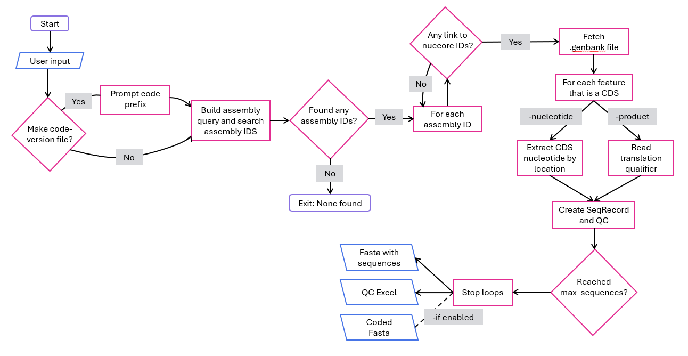
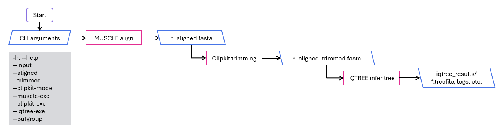

Objetivo del Proyecto
NBGD es una pipeline que automatiza la descarga y el análisis filogenético de genes o productos génicos desde la base de datos de NCBI RefSeq.
¿Qué es una pipeline?
En programación una pipeline no es más que una secuencia de procesos conectados entre sí, donde la salida de cada paso es la entrada del siguiente. Esto permite dividir una tarea compleja en pasos más pequeños y modulares, lo que hace que sea más fácil automatizarla.
¿Para qué sirve?
- Descargar lotes grandes de secuencias de manera reproducible (RefSeq)
- Generar alineamientos y árboles filogenéticos a partir de un FASTA
- Hacer QC (control de calidad) con un Excel con metadatos
- Explorar diversidad genética en bacterias, arqueas o virus
Conceptos Clave
Glosario de términos importantes para entender el pipeline y el análisis filogenético.
RefSeq
Base de datos de referencia de NCBI con secuencias curadas y de alta calidad. Es el "estándar oficial" para análisis genéticos.
Entrez
Sistema de búsqueda de NCBI que permite acceder programáticamente a sus bases de datos biológicas.
TaxID
Identificador numérico único para organismos en NCBI. Por ejemplo, Staphylococcus aureus = 1280.
CDS (Coding DNA Sequence)
Secuencia de codificación: la parte del ADN que codifica para una proteína. Contiene la información genética real.
Command-Line Interface (CLI)
Interfaz de línea de comandos: una forma de ejecutar programas escribiendo comandos en una terminal.
Biopython
Librería de Python para manipular secuencias biológicas y formatos comunes (GenBank, FASTA, etc.).
Alineamiento
Proceso de organizar secuencias para identificar posiciones homologas (heredadas de un ancestro común). Revela similitudes y diferencias.
Recorte (Trimming)
Eliminar columnas dudosas o con muchos huecos del alineamiento para mejorar la calidad del árbol filogenético.
Árbol Filogenético
Diagma que muestra las relaciones evolutivas entre secuencias. Los nodos representan ancestros comunes y las ramas muestran divergencia.
Cómo Funciona
Paso 1: Búsqueda y Extracción de Genes
download.py
Este script busca ensamblados RefSeq, sigue enlaces a nuccore y extrae secuencias por anotación:
- Permite elegir secuencias de nucleótido (CDS) o proteínas (traducción)
- Busca por términos (genes o productos) en qualifiers: /gene, /gene_synonym, /product, /note
- Genera un FASTA con las secuencias extraídas (y opcionalmente uno codificado)
- Genera un Excel (.xlsx) con metadatos para control de calidad (QC)

Paso 2: Alineamiento, Poda y Árbol Filogenético
aln_trim_tree.py
Este script procesa las secuencias descargadas:
- Alinea las secuencias usando MUSCLE (alineamiento múltiple)
- Poda las regiones problemáticas usando ClipKIT
- Construye un árbol filogenético usando IQ-TREE

Este paso usa herramientas externas que deben estar instaladas antes de empezar la pipeline.
| Herramienta | Función | Windows | Linux/macOS |
|---|---|---|---|
| MUSCLE | Alineamiento múltiple de secuencias | Descargar e instalar | Instalar con apt/brew |
| ClipKIT | Poda de alineamientos | Se instala con requirements.txt | Se instala con requirements.txt |
| IQ-TREE | Construcción de árboles filogenéticos | Descargar e instalar | Instalar con apt/brew |
Inicio Rápido
Sigue estos pasos para ejecutar el pipeline en tu computadora.
Instalar MUSCLE e IQ-TREE
Comprueba que MUSCLE e IQ-TREE están disponibles antes de ejecutar el Paso 2.
Abrir la carpeta del proyecto en la terminal
Abre una terminal en la carpeta donde descargaste/clonaste NBGD.
Ejecutar el setup
# Linux/macOS
bash ./setup.sh
# Windows (PowerShell)
powershell -ExecutionPolicy Bypass -File .\setup.ps1Estos comandos crean un entorno virtual, instalan dependencias y arrancan la pipeline.
Qué hace el setup:
Responder a los prompts
Al final verás un menú sencillo. Elige si quieres ejecutar el Paso 1, el Paso 2 o ambos, y contesta a las preguntas.
Normalmente se te pedirá: email de Entrez, API key (opcional), tipo de secuencia, términos de búsqueda y TaxID (recomendado).
Obtén una clave API de NCBI en tu cuenta de NCBI. Es gratuita y permite descargas más rápidas.
Preguntas Frecuentes
Referencia Técnica
Estructura del Proyecto
NBGD/
├── run.py # Menú interactivo (Step 1/2/ambos)
├── setup.sh / setup.ps1 # Setup: crea .venv + instala deps
├── requirements.txt # Dependencias de Python
├── command.txt # Comandos de arranque (copy/paste)
├── 1 SEARCH GENES/
│ └── download.py # Step 1: descarga/extracción (RefSeq/Entrez)
└── 2 ALN_TRIM_TREE/
└── aln_trim_tree.py # Step 2: MUSCLE -> ClipKIT -> IQ-TREEDependencias
- Python 3.12+ - Intérprete
- Biopython - Manipulación de secuencias biológicas
- OpenPyXL - Generación de archivos Excel
- Certifi - Certificados SSL para NCBI
- ClipKIT - Poda de alineamientos
Herramientas Externas
- MUSCLE - Alinear secuencias (instalar con
sudo apt install muscleen Linux) - IQ-TREE - Construir árboles (instalar con
sudo apt install iqtreeen Linux)
Troubleshooting
Problemas comunes y soluciones rápidas.